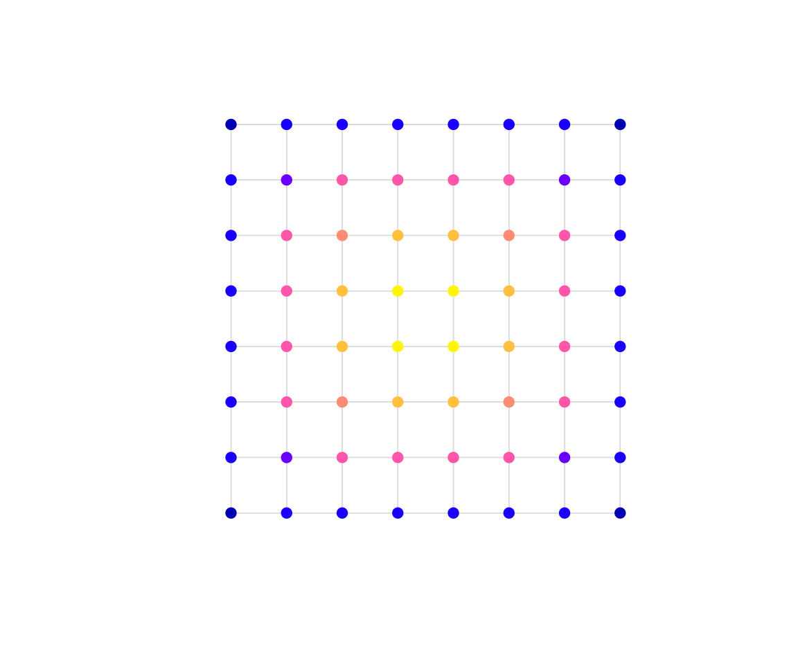

osmnxr summarises a street network with a handful of
metrics, all computed in the Rust core. This article uses the offline
grid; the workflow is identical on a network from
ox_graph_from_place().
g <- example_osm_graph(n = 8, spacing = 100)Basic statistics
ox_basic_stats() reports node and edge counts, total and
mean edge length, mean out-degree, self-loops and average circuity:
ox_basic_stats(g)
#> # A tibble: 1 × 7
#> n_nodes n_edges total_length mean_length mean_out_degree self_loops circuity
#> <int> <int> <dbl> <dbl> <dbl> <int> <dbl>
#> 1 64 224 22400 100 3.5 0 1Circuity
Circuity is the ratio of street length to straight-line distance
between edge endpoints. A value of 1 means perfectly
straight streets; higher values mean more winding ones. A grid is
exactly straight:
ox_circuity(g)
#> [1] 1Centrality
Which intersections carry the most through-traffic, and which are
most central? ox_centrality() returns betweenness (Brandes’
algorithm) and closeness:
ct <- ox_centrality(g, normalized = TRUE)
ct[order(-ct$betweenness), ][1:5, ]
#> # A tibble: 5 × 3
#> osmid betweenness closeness
#> <int> <dbl> <dbl>
#> 1 36 0.153 0.00246
#> 2 28 0.153 0.00246
#> 3 29 0.153 0.00246
#> 4 37 0.153 0.00246
#> 5 20 0.133 0.00232Join the scores back onto the nodes to map them:
nodes <- g$nodes
nodes$betweenness <- ct$betweenness[match(nodes$osmid, ct$osmid)]
plot(g, col = "grey85")
plot(nodes["betweenness"], pch = 19, add = TRUE)
The most between-central nodes sit in the core of the grid — exactly where shortest paths concentrate. On a real network this highlights structurally important junctions for mobility and resilience planning.